The big picture in four sentences
Zero Trust Branch replaces legacy hub-and-spoke networking with an inline gateway that puts every device on its own /32 network, routes all traffic through Zscaler's cloud for inspection, and enforces identity- and context-based policies at the branch edge — with no implicit trust anywhere.
You deploy it by creating a Site, activating an appliance, and it phones home. You segment with /32 airgap. You integrate ZIA for internet, ZPA for private apps, CrowdStrike/Armis for posture. You monitor with Analytics and troubleshoot via the Gateway CLI.
How the 10 Sections Connect
Concepts, deployment, tunnels, and administration
Networks have traditionally operated on a "castle and moat" model — once you're inside the perimeter, everything trusts you. That worked when users, devices, and apps stayed in one building. It doesn't hold when the branch edge is a gateway to everywhere.
- If a laptop inside the branch gets compromised, what stops it from attacking every other device on the same network?
- Why does being "inside the network" no longer equal being trustworthy — especially at a branch site?
- If you had to redesign branch networking with zero default trust, where would you place the policy enforcement point — and why?
ZTB is an inline branch gateway that sends all traffic outbound through the Zscaler cloud (ZTE) for inspection and policy enforcement — without extending the corporate network to the branch or trusting any device by default.
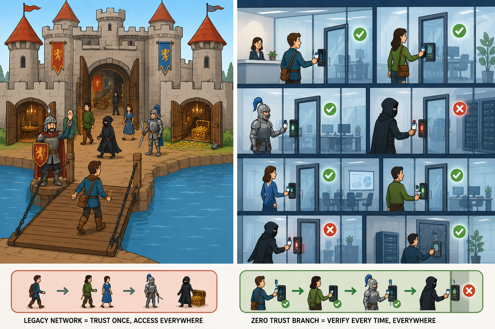
- ZTE = Zero Trust Exchange — the cloud-delivered policy broker at the center of everything
- SASE = ZTB (network) + ZIA (internet security) + ZPA (private app access)
- Legacy problems: traffic backhaul, implicit trust, flat networks, hub-and-spoke complexity
- ZTB installs inline as the branch gateway — no network redesign required
- Branch evolution: from MPLS → SD-WAN → Zero Trust Branch
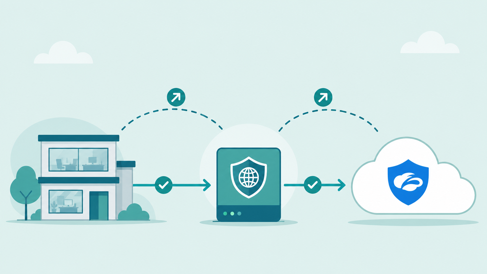
On a traditional /24 subnet, any device can reach any other device on that segment without going through a gateway. Now consider what happens if a printer, a surveillance camera, and a finance laptop all share that subnet — and one of them gets infected.
- What changes about device communication when every device has a /32 instead of a shared /24 — what must now happen for any two devices to talk?
- Which category of attack becomes nearly impossible when east-west traffic always flows through the gateway?
- Why would a hospital or a manufacturer care about IoT isolation more intensely than a typical office network would?
Every device gets a /32 "segment of one" — it is its own isolated network island. All traffic must pass through the ZTB gateway, preventing any device from communicating with another without an explicit policy permit.
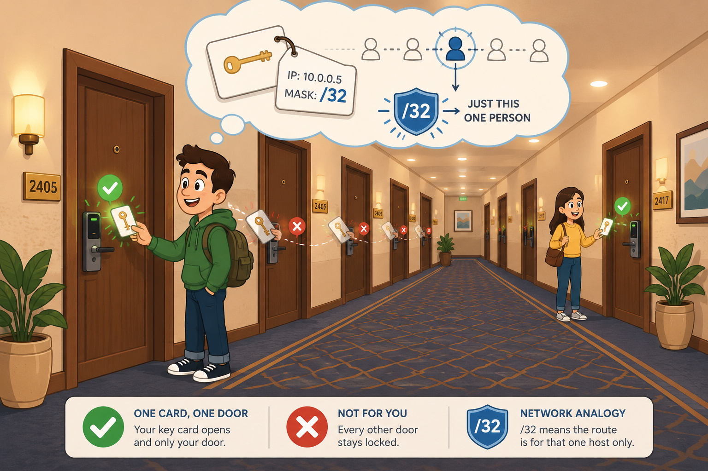
- 4 hardware models: ZT-400 (small branch) → ZT-600 → ZT-800 → ZT-8010 (enterprise, 15x 1GbE + 8x 100G SFP+)
- Airgap = /32 full isolation | Airgap-Lite = subnet preserved | Static = DHCP off
- 6 main use cases: IoT/OT isolation, M&A onboarding, retail, healthcare, manufacturing, campus
- Device fingerprinting: MAC OUI (manufacturer from first 3 bytes) + DHCP Options (53/60)
- ZTB eliminates: east-west firewalls, NAC appliances, static ACL rules
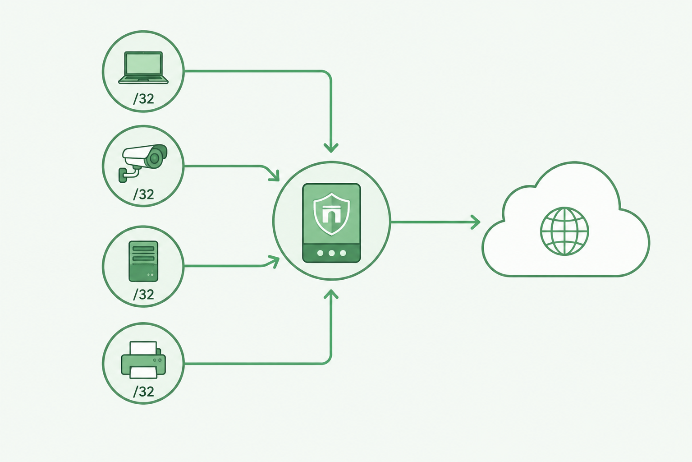
A new gateway arrives at a branch site. It has no configuration yet. Before it can do anything useful, it needs to "phone home" and receive its instructions from the cloud. Think carefully about the direction of that connection — who initiates it, and why that matters.
- Does Zscaler reach into the branch to configure the appliance, or does the appliance reach out to Zscaler? What are the firewall implications of each direction?
- SDA (browser-based) is the preferred method, but a serial console option also exists — under what conditions would you actually need the console?
- If activation requires port 443 outbound and UDP 500/4500 — and your branch firewall blocks all outbound traffic by default — what do you need to do before the appliance can activate?
Create a Site in the portal, map interface roles (WAN/LAN/Mgmt/HA/Console), then activate the appliance using SDA (URL-based) or an Activation Code (console-based). The appliance calls home on port 443 and downloads its full configuration.
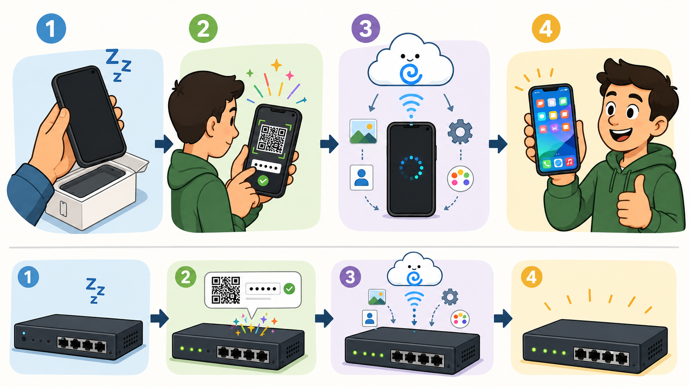
- Create Site first in portal → then activate appliance (site is the logical container)
- SDA = Simple Device Activation — URL-based, preferred method, works from appliance browser
- Activation Code = time-limited code entered directly into the console (alternative method)
- Console access: PuTTY → serial cable → 115200 baud → option 4 = Show Config, option 6 = Platform CLI
- Required outbound: TCP 443 + UDP 4500/500 (IPSec IKE) — firewall must allow these before activation
- Final states: Standalone (single gateway) or Active/Standby (HA pair)
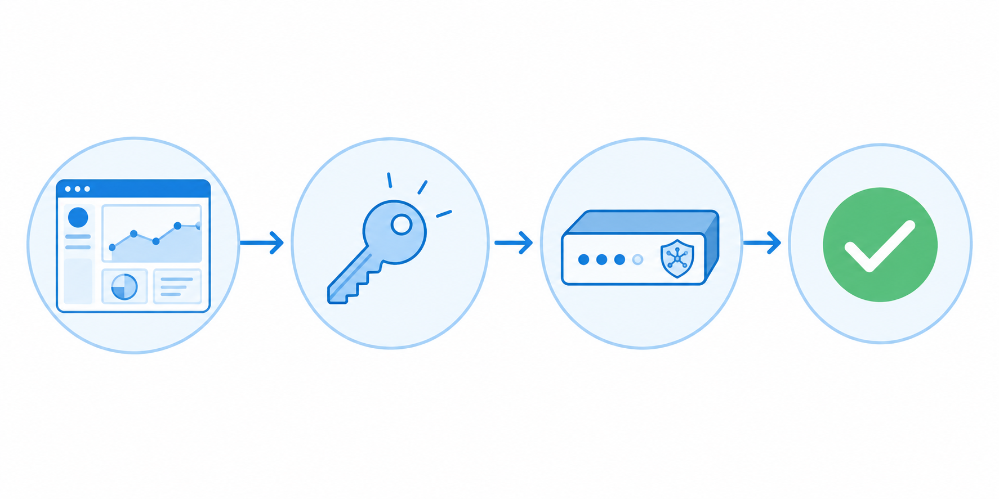
All branch internet traffic is about to be routed through a cloud security service. Every packet takes a detour — branch → tunnel → Zscaler cloud → internet. That's a deliberate design choice. Think about what you gain and what overhead you accept.
- GRE is faster than IPSec but doesn't encrypt. IPSec encrypts but adds overhead. When would the trade-off favor one over the other?
- What can a cloud security service like ZIA inspect that a traditional hardware firewall sitting at the branch edge could not?
- IKEv1 and IKEv2 both handle key exchange for IPSec — what specific problem does IKEv2 improve on, and why does it matter in a branch deployment?
IPSec tunnels route all internet-bound traffic through ZIA for inspection (default, secure, encrypted). GRE tunnels are faster but unencrypted — used when IPSec overhead is a concern. ZIA Locations attach the branch site to the nearest Zscaler data center for consistent policy.
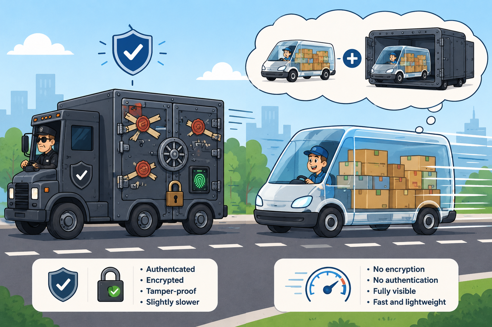
- IPSec protects traffic with encryption (AES), integrity (HMAC), and authentication (IKE)
- IKEv1 = legacy (3 messages, less secure) | IKEv2 = modern (4 messages, faster, more reliable)
- GRE = encapsulates original packet: Outer IP Header → GRE Header → Inner Payload
- ZIA Locations: 6 benefits including consistent policy, traffic inspection, and simplified management
- Verify IPSec:
docker exec strongswan ipsec status
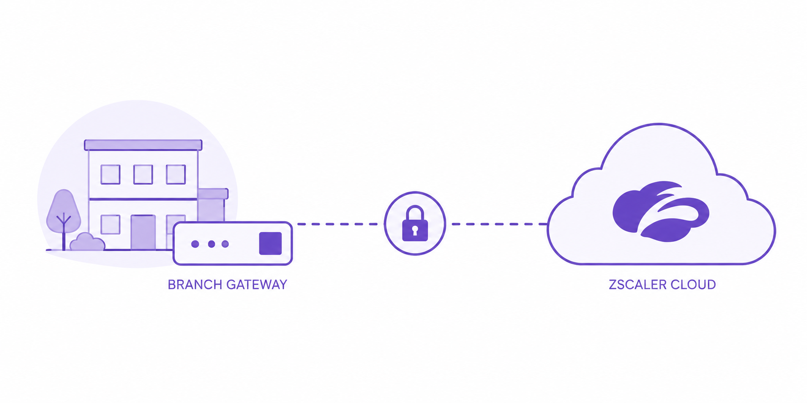
You manage 80 branch sites and need to push a new firewall policy. You could touch each site individually — or you could think about how template systems work in other parts of IT. But templates don't cover everything. Some rules need to be site-specific.
- If firewall rules evaluate Site → Template → Global → System and "first match wins" — where does a site-specific exception need to live to take effect before a template rule blocks it?
- What happens to a packet that matches none of the rules at any level? Is that safe?
- The Ransomware Kill Switch isolates the entire network with one click. Under what circumstances is that the right call — and what do you have to accept as the trade-off?
Templates standardize configuration across multiple branch sites. Tags classify devices for policy targeting without relying on IP addresses. Firewall policies evaluate in order: Site → Template → Global → System (first match wins). The Ransomware Kill Switch isolates the entire network with one click.
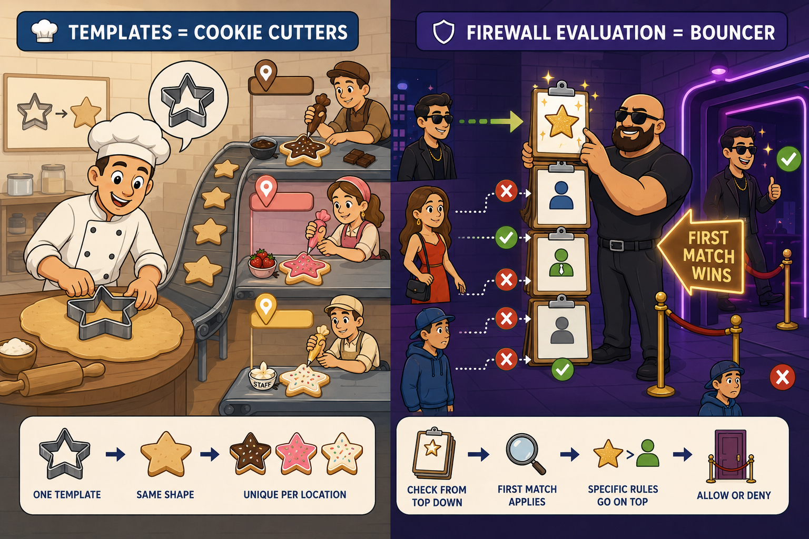
- Templates = reusable config bundles applied to multiple sites (Default Template or Custom)
- 9 object types: IP Groups, FQDNs, URL Categories, App Groups, Service Groups, and more
- 4 firewall evaluation levels: Site → Template → Global → System Default
- RKS = Ransomware Kill Switch — path: Policies › Access Control › Segmentation › ZTB › Kill Switch
- PBR = Policy-Based Routing — 3 steps: Match (source IP + ports) → Apply policy → Steer traffic
- Routing decision: ZIA (internet) → ZPA (private apps) → Direct (everything else)
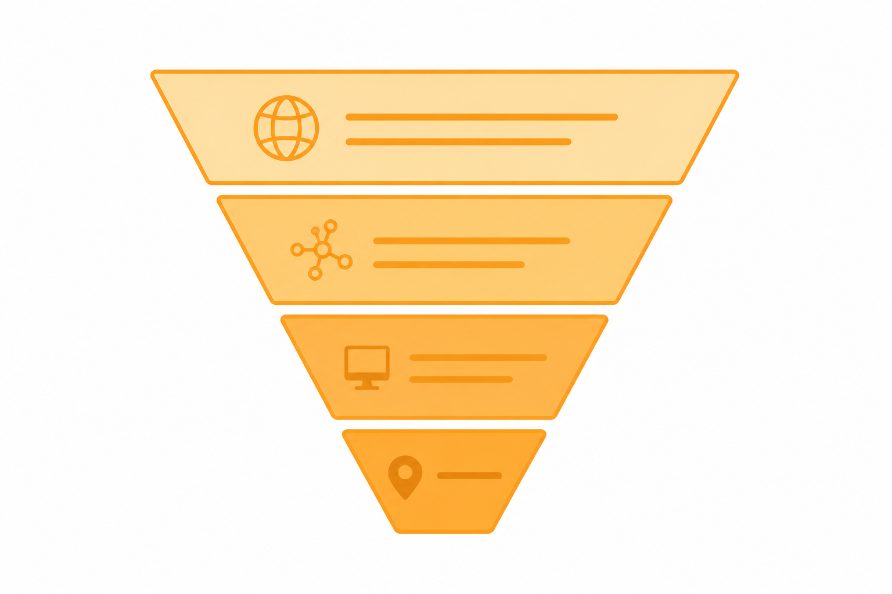
Advanced services, visibility, integrations, and diagnostics
A single gateway is a single point of failure. If it reboots mid-day, every device at the branch loses connectivity. High availability solves this — but seamless failover requires more than just a second device. Think about what the backup needs to know for active sessions to survive a switchover.
- If the Master gateway fails mid-TCP-session, what data must the Backup already have in order for the user to not notice the switchover?
- SNMPv2 uses a "community string" — essentially a shared password in plaintext. What exactly does SNMPv3 add, and what threat does each addition mitigate?
- DNS Override lets you rewrite DNS responses at the branch. What legitimate use case justifies this — and what could go catastrophically wrong if it's misconfigured?
VRRP keeps two gateways in sync so one takes over instantly if the other fails. DHCP assigns IPs in three Airgap modes. SNMP v2 uses community strings (basic) while v3 adds authentication and encryption. DNS Policies let you allow, redirect, or override DNS queries site-by-site.
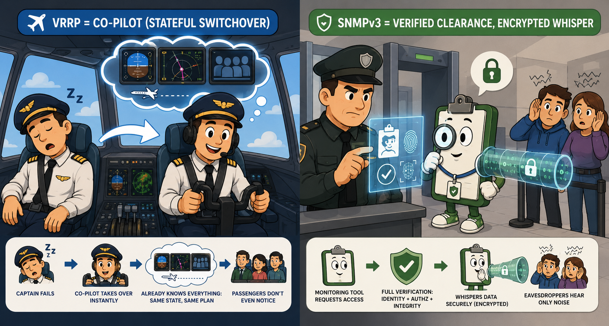
- VRRP features: non-preemptive failover, Conntrack sync, link state monitoring, GARP, Keepalived
- v7.7 = VRRP over WAN link | v7.8+ = dedicated HA link (faster, more reliable)
- DHCP Airgap = /32 isolation | Airgap-Lite = original subnet | Static = DHCP off
- IP reservations via CSV: mac_address, ip_address, hostname, type, status
- SNMPv2 whitelists SNMP servers | SNMPv3 adds auth (HMAC-SHA) + privacy (AES/DES)
- DNS Policy actions: allow, reject, redirect to DNS gateway, or override response
- All IPv4 in DNS Policies = Local Interface IPs (AppC, Private, Airgap)
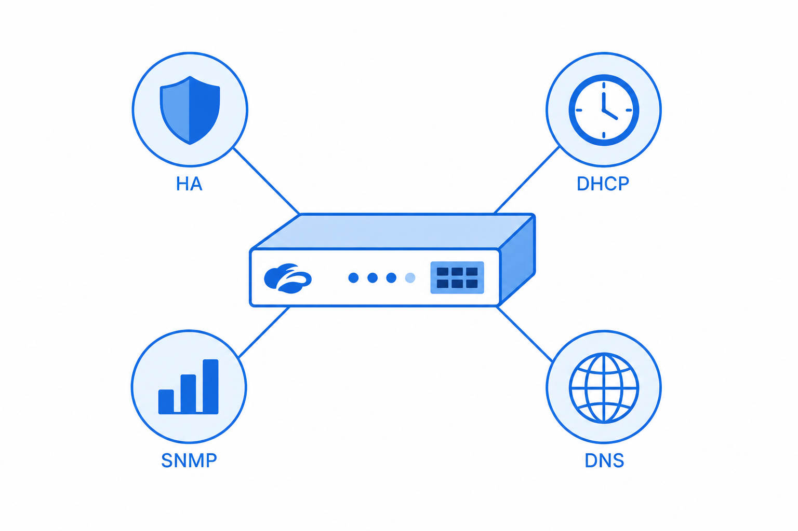
Traditional VPN creates an inbound listener — a port the firewall must allow inbound, visible to port scanners and attackers. App Connector eliminates that entirely. Think about what it means for your attack surface when zero inbound ports need to be opened on the data center firewall.
- If App Connector only makes outbound connections and never listens inbound, how does a user's request actually reach the private application?
- BGP learns routes dynamically and adapts when links go up or down. What operational problem does this solve compared to maintaining static routes across dozens of branch sites?
- Routed tunnels preserve the original source IP. Which types of applications specifically break if the source IP changes mid-session — and what do they have in common?
ZPA App Connectors live inside the data center, initiate outbound-only connections to the Zero Trust Exchange, and never expose inbound ports. BGP replaces static routes with adaptive path discovery. Routed tunnels link branches with encrypted, source-IP-preserving paths for legacy apps.
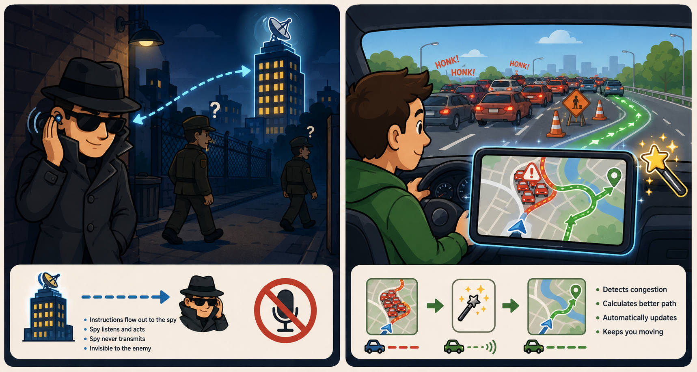
- ZPA flow: User+ZCC → Zero Trust Exchange (identity+context check) → App Connector (outbound only) → Private App
- Provisioning key created in ZPA → pasted into ZTB site ZPA tab → status goes to Connected
- Validate:
docker ps -aon gateway — look for App Connector container - BGP peer params: Name, Neighbor IP, Neighbor AS, Local IP, Local AS, Password, Graceful Restart Time
- OSPF Hello Interval = 10s | Dead Interval = 40s (4× Hello) — must match on both ends
- Routed tunnels preserve source IP — required for VoIP, TACACS+, ATMs, Active FTP
- DHCP relay over routed tunnel: broadcast → unicast encap → encrypted tunnel → DC DHCP server
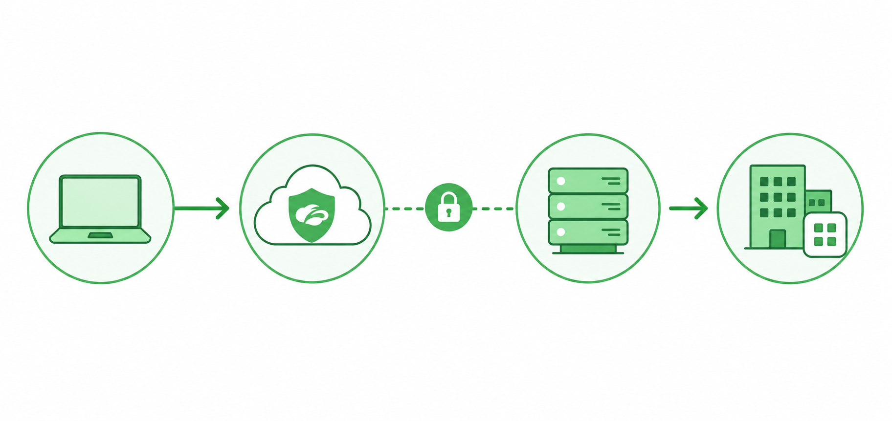
You can collect all traffic data, or you can collect the right data. Traffic Flow Charts, link scores, packet logs, and flow logs each give you a different view of what's happening on the network. Think about which tool you'd reach for in different situations — and what each one cannot tell you.
- You suspect two devices that should never communicate are talking to each other. Which monitoring tool surfaces this, and how is the data represented?
- A branch user reports slow internet. The link score is 4 out of 30. What does that number tell you, and what does it not tell you about the root cause?
- Flow logs record one entry per 4-tuple per hour by default. Packet logs capture every individual packet. When would the detail of packet-level capture be worth the storage cost — and when would it be overkill?
The ZTB dashboard shows device counts, threats, and network topology. Traffic Flow Charts visualize device-to-device communication (up to 10 min delay). Link Scoring (0–30) measures WAN quality. Packet Logs give raw per-packet detail. Flow Logs give per-session summaries (one per 4-tuple per hour by default).
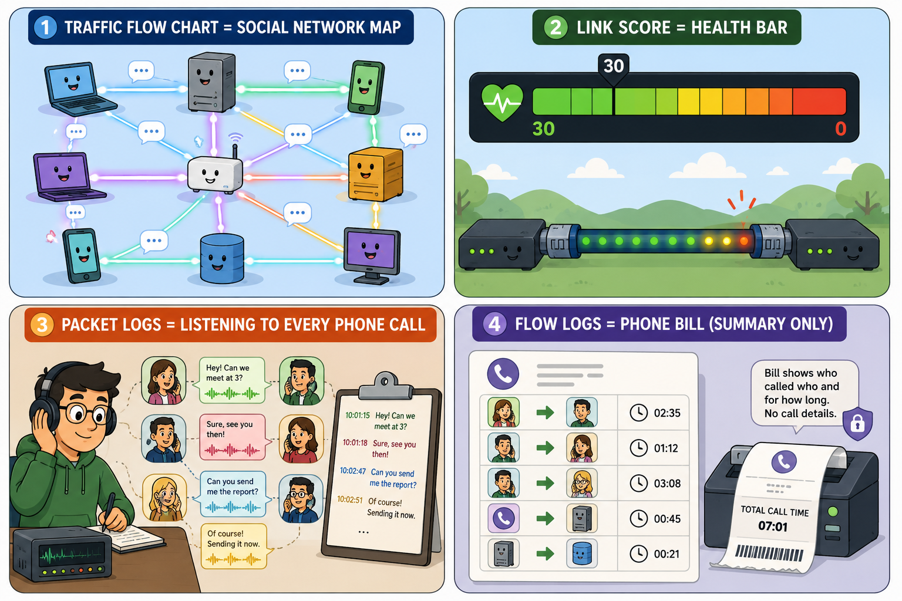
- Dashboard panels: Insights (endpoints/threats), Device Insights (brand/model/IoT), Network Topology (Charts)
- Traffic Flow Chart: every device = node, every communication = edge — built on graph database
- Link Score inputs: latency (ms) + jitter (ms) + packet loss (%) — normalized over 30 iterations
- Interface stats path: Sites → Interfaces → click WAN score → Interface Statistics 24h
- Packet Logs: filter by source (IP/port/OS/browser/geo), destination, or host — path: Logs → Packet Logs
- Flow Logs: 1 entry/hour per 4-tuple by default — disable throttling in policy for more detail
- Gateway monitoring: Sites → Monitoring → CPU/memory/disk + Top Containers + 24h trends
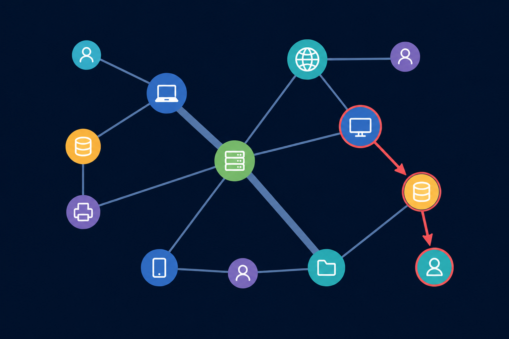
Device trust isn't a binary yes/no — it's a spectrum that changes over time. A fully-patched laptop with active security software is more trustworthy than one that hasn't been updated in 90 days. Now think about what it would take to automatically enforce network access policies based on that continuously-updating score.
- A user with a ZTA score of 80 is in the middle of a critical meeting. Their score drops to 20 because a patch check failed. What should happen to their network access — and is there any way to make that policy more nuanced than a hard cut?
- Armis discovers and classifies devices without installing any agent. What signals could it possibly use to identify whether a device is a medical infusion pump versus a security camera?
- Why is correlating ZTB logs in a SIEM more powerful than reviewing them inside the ZTB portal alone?
CrowdStrike ZTA scores (0–100) automatically classify devices into risk tiers and ZTB enforces matching policies. Armis discovers and classifies all IT/IoT/OT devices agentlessly. SIEM integration forwards ZTB logs over TCP 514 to a centralized platform for correlation, investigation, and compliance.
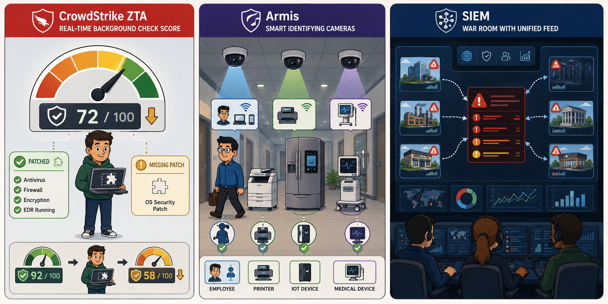
- CrowdStrike evaluates: OS patch level, sensor status, vulnerabilities, user activity, active threats
- CrowdStrike config: Client ID + Client Secret + Base URL → run connectivity test → save
- Armis = agentless, discovers IT/IoT/OT/medical devices — no agents required
- Armis access tiers: Managed+Compliant = full | Unmanaged/Unknown = limited | High Risk/Vulnerable = blocked
- SIEM setup: Infrastructure → Connectors → Edge → Integrations → SIEM Integration → Settings
- SIEM values: Host = server IP, Protocol = TCP, Port = 514 — then Confirm → Test → Save
- Validate rsyslog:
sudo systemctl status rsyslog— logs at/var/log/syslog
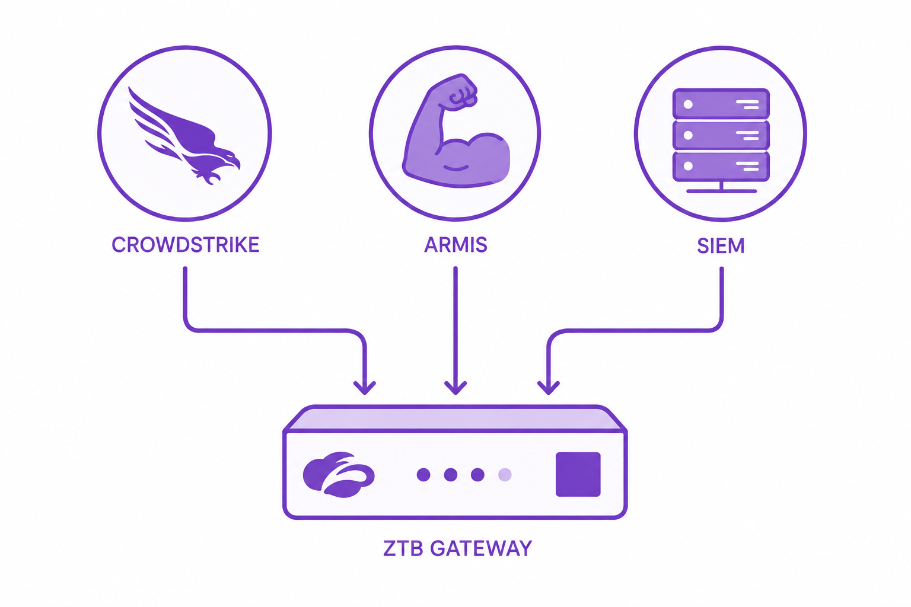
Troubleshooting is a process of elimination — you start broad and narrow down. The temptation is to jump to conclusions ("it must be the firewall") instead of building evidence first. Think about the most logical sequence of checks, from widest scope to most specific.
- Ping succeeds to 8.8.8.8 but the web application won't load. What does that tell you about where the problem is — and what does it rule out?
show ip routeandtracerouteboth help you understand paths. What does one show that the other doesn't, and when would you need both?- ZIA IPSec tunnels show as ESTABLISHED but branch traffic still isn't reaching the internet. The problem is post-tunnel. What would your next three diagnostic steps be?
The Gateway CLI (accessed via SSH → admin → option 6) is the first line of defense. Core commands cover reachability, path tracing, routing, and packet capture. VRRP is verified with three Docker commands inside the VyOS container. ZIA IPSec issues follow a 5-step diagnostic flow. PBR flow marking confirms traffic is steering correctly.
show ip route = reading the patient's X-ray (full map of where traffic can go). tcpdump = listening to every heartbeat. Evidence first, assumptions last.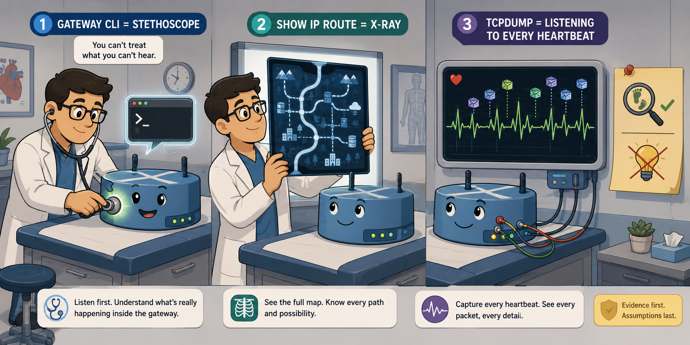
- CLI access: SSH to Mgmt/WAN IP → login as admin → airgap console → option 6 = Platform CLI
- Type
?for all commands |ping ?for sub-commands — 5 command categories show ip route= all WAN/LAN/ZPA/IPsec routes |monitor traffic interface GE8 filter icmp= platform capturetcpdump -i GE8 icmp= Linux cross-validation — both tools confirming = high confidence- VRRP commands: show config → show vrrp → systemctl status keepalived (all inside vyos_container)
- ZIA IPSec 5 steps: swanctl.conf sanity → fwmark → zia_ipsec_rt routes → MARK applied → selectors valid
- WAN best link: "best" routing table → healthiest link gets lowest metric → path of least resistance
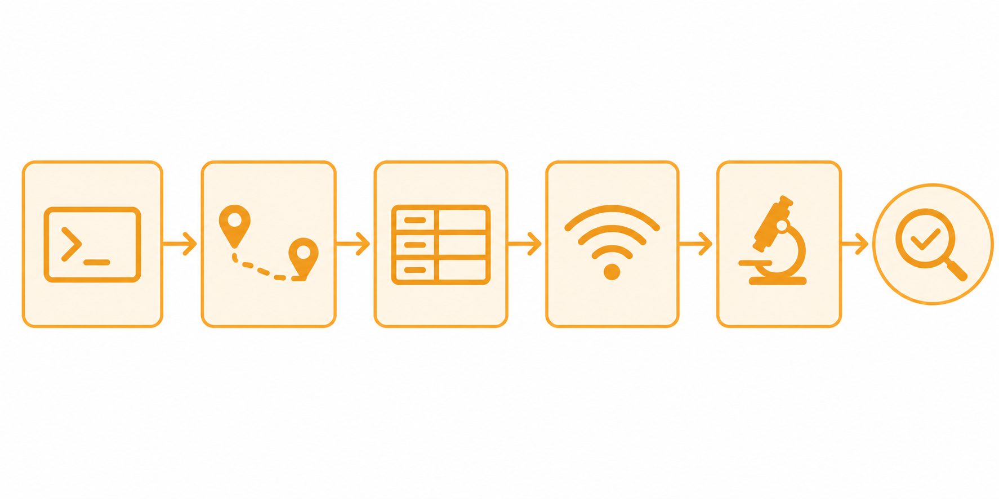